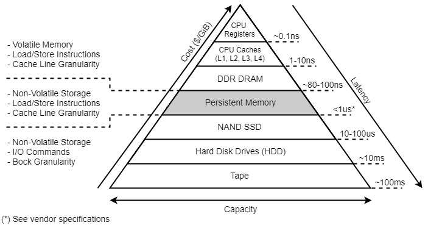
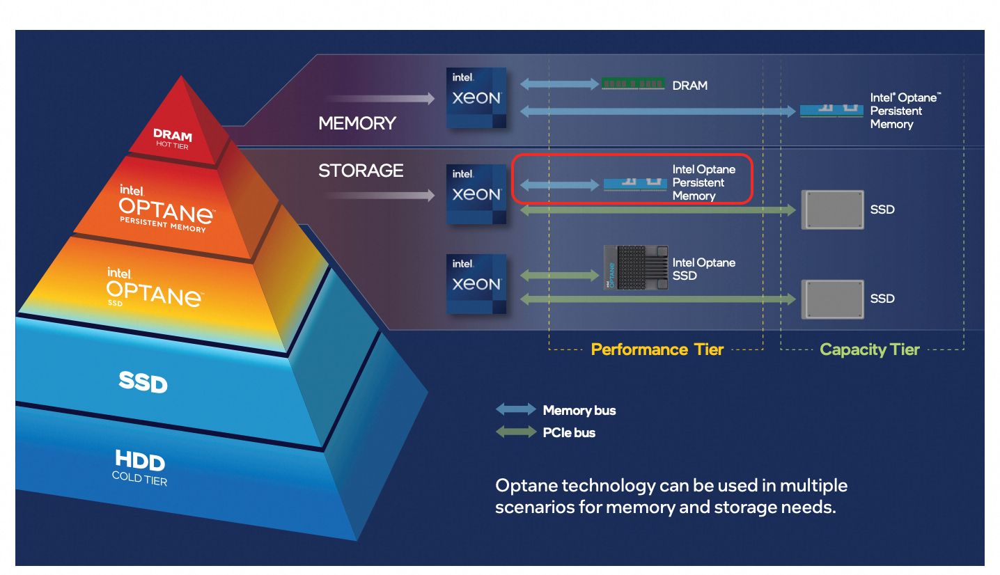
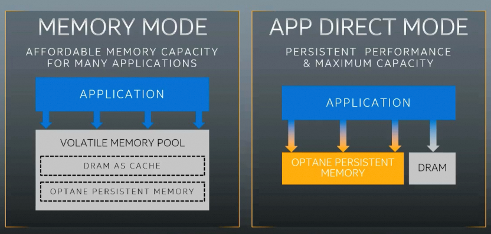
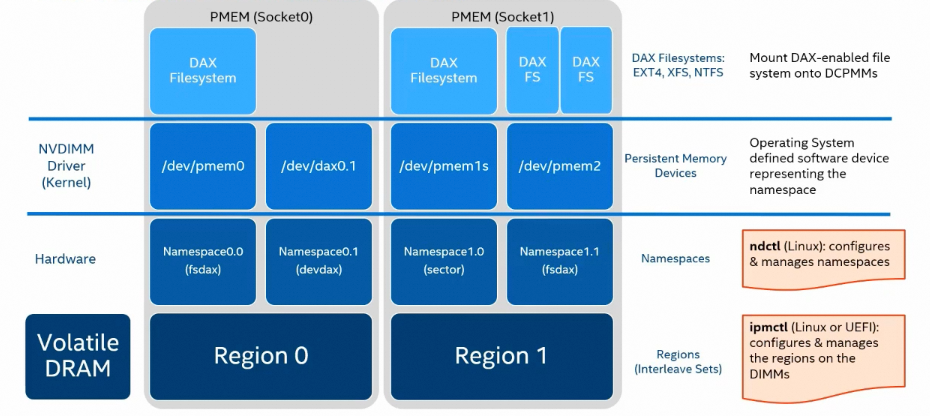
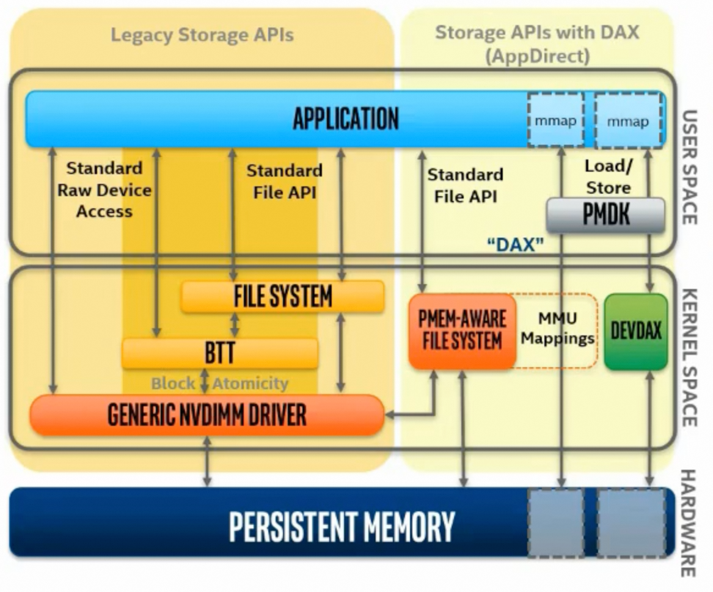
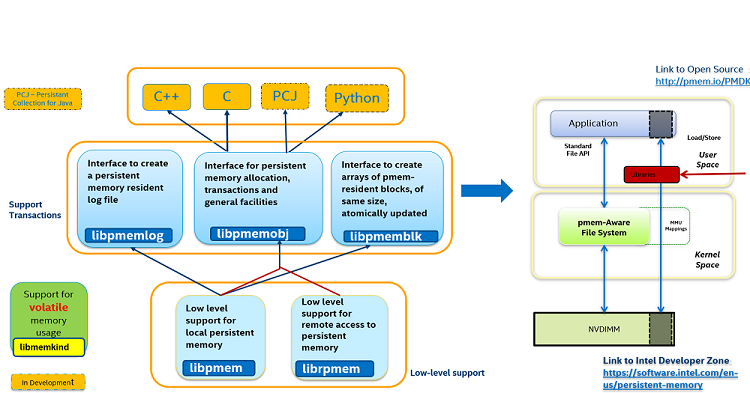
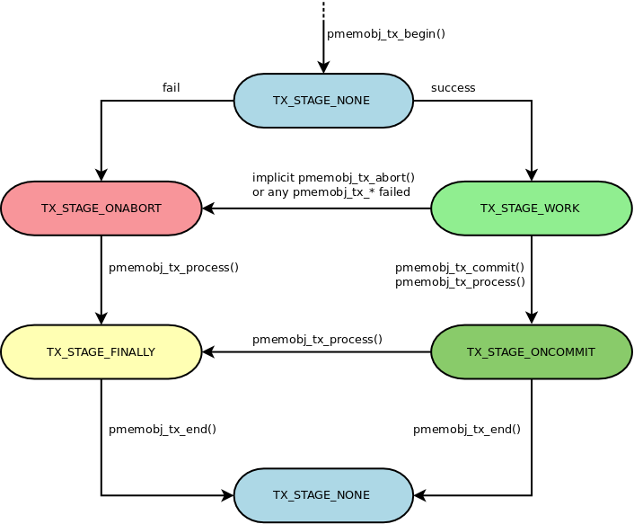

初识Persistent Memory，记录相关概念，编程模型，及一些初步测试。
简介
过去几十年来，计算机系统一直采用如图1所示的内存-存储层级结构。这个层级结构利用了“局部性原理”，即把频繁访问的数据放在离CPU更近的地方，以提高性能。
然而，易失性内存（DRAM）和非易失性存储（如NAND SSD或硬盘）在容量、价格和速度方面未能跟上CPU的发展步伐，很快成为了系统和应用性能的瓶颈。
持久内存（PMem, Persistent Memory），也被称为非易失性双列直插式内存模块（NVDIMM, Non-Volatile Dual In-line Memory Module）或存储级内存（SCM, Storage Class Memory），为内存-存储层级结构引入了一个新的层级，填补了传统内存与存储之间的性能和容量差距，如图2所示：

借助持久内存，应用程序现在有了一个新的数据存储层级。除了传统的内存和存储层级外，持久内存层级提供了比DRAM更大的容量，同时性能远超传统存储设备。应用程序可以像访问传统内存一样访问持久内存，从而无需再将数据在内存和存储之间来回分页传输，大大提升了效率。
Intel® Optane™ Persistent Memory就是一个这样的产品。注意：区分Optane Persistent Memroy和Optane SSD；前者是本文的主题PMem，后者则是一款比传统NAND SSD性能更好的SSD（还是块存储，而非字节寻址的持久化内存）。它们的层级如图3所示。

概念
- PMem模块的工作模式：这是PMem模块固件层面的工作方式。
- Memory Mode：In Memory Mode, the installed Intel® Optane™ PMem modules act as main system memory, and the DRAM capacity becomes an extra level of cache. The CPU’s memory controller manages the persistent memory capacity. Although the media is natively persistent, data is always volatile in Memory mode by cryptographically erasing all the data during every system reboot.
- AppDirect Mode：PMem and DRAM DIMMs act as independent memory resources under direct load/store control of the application. This allows the PMem capacity to be used as byte-addressable persistent memory that is mapped into the System Physical Address (SPA) space and directly accessible by applications.

Interleave-Set（交错集）：是指将多个PMem模块（DIMMs）组合成一个逻辑单元，数据以条带化（striping）的方式分布在这些模块上。其目的是通过并行访问多个模块，提高带宽和性能（类似于RAID 0）。同时也提供了更大的连续地址空间。注意：一个Interleave-Set通常由同一CPU Socket（NUMA节点）上的多个PMem模块组成，以避免跨NUMA访问延迟。Interleaving is a technique that allows spreading adjacent virtual addresses (within a page) across multiple memory devices. This hardware-level parallelism increases the available bandwidth from the devices. Interleave-Set是PMem模块固件层面的配置。
Region（区域）：是操作系统对Interleave-Set的表示，由内核在启动时根据ACPI NFIT表创建。一个Region对应一个Interleave-Set，反之亦然。待验证：AppDirectNotInterleaved模式下，一个PMmem（即一个Non-Interleave-Set）对应一个Region。
Direct Access (DAX)：DAX allows applications to directly access persistent media using memory-mapped files. Filesystems that support DAX include Linux ext4 and XFS, and Windows NTFS. These filesystems bypass the page cache, I/O subsystem and avoid interrupts and context switching, allowing the application to perform byte-addressable load/store memory operations. For PMem, this is the fastest and shortest path to stored data. Eliminating the I/O stack’s software overhead is essential to take advantage of persistent memory’s extremely low latencies and high bandwidth capabilities, which is critical for small and random I/O operations.
Namespace（命名空间）：Namespace是在Region之上划分的逻辑设备。一个Region可以划分为多个Namespace（类似于磁盘分区），也可以整个Region作为一个Namespace。Namespace是最终暴露给操作系统的设备（如
/dev/pmem0），应用程序或文件系统可以直接使用这些设备。Namespaces are associated with AppDirect Mode only. Memory Mode没有Namespace一说。Namespace有不同的模式，决定了如何访问持久内存：- fsdax（Filesystem DAX）：如上Direct Access所述。
- devdax（Device DAX）：Devcie DAX enables similar mmap(2) DAX mapping capabilities as Filesystem DAX. However, instead of a block-device that can support a DAX-enabled filesystem, this mode emits a single character device file (/dev/daxX.Y). Use this mode to assign PMem to a virtual-machine, register persistent memory for RDMA, or when gigantic mappings are needed. 将整个Namespace作为一个字符设备（如
/dev/dax0.0）暴露，应用程序可以直接mmap这个设备，实现极低延迟的持久内存访问。 - sector：可以作为一个传统的块设备以及on块设备的文件系统，且这个文件系统不限制类型（任意文件系，不需要dax支持）。这种模式通常用于兼容旧系统或不支持DAX的文件系统。
- raw：当作一个内存盘（memory disk）直接访问，不支持DAX。
Label Storage Area（标签存储区）：PMem模块上的元数据存储区，位于PMem模块的保留区域（通常为256KB）。它存储模块的物理拓扑信息（DIMM 位置、容量），记录模块所属的Interleave-Set，Namespace配置，维护健康状态和故障域信息。标签存储区独立于主存储区，即使主存储区被重新配置，标签区也能保持配置信息。注意：标签存储区是PMem模块级别的，每个PMem模块都有自己的标签存储区。通过NFIT(NVDIMM Firmware Interface Table)暴露给操作系统，使用BTT(Block Translation Table)实现原子写。
Configuration Goal：配置PMem的模式，Memory Mode，AppDirect mode，或者部分Memory Mode，部分AppDirect Mode；对于AppDirect模式，还需要配置是否interleaving（AppDirect/AppDirectNotInterleaved）。可以通过BIOS配置，也可以通过ipmctl工具配置（ipmctl是Intel® Optane™的专属工具）。Goal配置存储在Label Storage Area中，for the BIOS to read on the next reboot. 重启之后，就自动配置好了Interleave-Set/Non-Interleave-Set和Region。
- AppDirect：一个Interleave-Set对应一个Region；这种模式下，只有一个PMem也会创建Interleave-Set；
- AppDirectNotInterleaved：一个PMmem（即一个Non-Interleave-Set）对应一个Region（待验证）；
随着DRAM空间的增大，AppDirect成为主要模式；在这种模式下，上述概念呈现如下图：

编程模型
Both Windows and Linux support memory-mapped files, a feature that has been around for a long time but not commonly used. For persistent memory, the APIs for memory mapping files are very useful; in fact, they are at the heart of the persistent memory programming model published by the Storage Networking Industry Association (SNIA)。
就是说，PMem主要依赖memory mapping API。对于Windows，创建mmap的接口是CreateFileMapping和MapViewOfFile，对于Linux则是mmap。内存映射创建好之后，the file appears in the address space of the application, allowing load/store access to the file contents。
不过，为了兼容legacy applications（使用open, read, write接口），也可以把PMem当成高速块存储，有三种方式：
- Standard Raw Device Access：把PMem当成普通块存储，
open裸的block设备，然后read,write,fsync； - Standard File API + Non PMem-Aware Filesystem：把PMem当成块存储，创建Non-PMem-Aware Filesystem，然后
open文件，并read,write,fsync； - Standard File API + PMem-Aware Filesystem：还是把PMem当成块存储，但创建PMem-Aware Filesystem，然后
open文件，并read,write,fsync(还需要吗?)；PMem-Aware Filesystem即支持DAX的文件系统(mount命令支持-o dax选项)，如Windows NTFS和Linux EXT4和XFS。DAX文件系统能够感知底层存储是PMem，进而bypass PageCache，直接读写底层PMem。
这三种方式对应下图左侧深黄色区域（前两种）和右侧浅黄色区域的左半边（第三种）。它们的共同特点是通过Standard API（open, read, write, fsync）访问，原有application不用修改。并且原有application还是把PMem当作块来使用：如数据库，还是把内存中的数据序列化，然后存储到PMem。这和memory mapping方式截然不同。

我们最感兴趣的还是SNIA推荐的memory mapping API（即上图中浅黄色区域的右半边）：把内存数据，不经过序列化，直接保存在PMem上。细分的话，又有两种模式：
- Memory Mapping API + PMem-Aware Filesystem：把PMem-Aware Filesystem中的文件映射到application的内存空间，然后直接以字节粒度访问。
- PMDK用户态库：跳过内核态文件系统（EXT4, XFS, NTFS），直接访问PMem (devdax namespace)；NVM Library Overview中介绍了PMDK的设计初衷与理念：不是
malloc()andfree()that allocates from the system’s pool of persistent memory（因为这样的接口不理解persistence，会导致persistent memory leak以及inconsistency），而是一个pmem-aware malloc() library；An application that wants to do things likemalloc(),free(), and some sort of transactions may find the NVM Library useful（不是malloc(),free()但像它们，并且支持transaction）。
PMDK
PMDK is a collection of open-source libraries and tools that are available today for both Linux and Windows.

注意：上图已过时，目前PMDK已经把libpmemblk, libpmemlog, librpmem等库标记为deprecated；当前支持的库是：
- libpmem: provides low-level persistent memory support.
- libpmem2: provides low-level persistent memory support, is a new version of libpmem.
- libpmemobj: provides a transactional object store, providing memory allocation, transactions, and general facilities for persistent memory programming.
- libpmempool: provides support for off-line pool management and diagnostics.
libpmemobj
transaction

使用pmemobj_tx_*函数族编程可能比较复杂，为了便利，libpmemobj定义了几个宏，使得transaction编程有点像C++中的try-cache-finally（事实上，底层实现也很像，都是基于setjmp/longjmp实现）：
1 | /* TX_STAGE_NONE */ |
这个结构看上去很清晰，不过要注意以下几点：
第一，在TX_BEGIN之前就存在的，且在TX_BEGIN/TX_END之间修改的变量，尽量加volatile。因为底层实现机制是setjmp/longjmp。
回顾setjmp/longjmp：非volatile变量的值可能在跳转后回滚到setjmp调用时的状态。这是由编译器优化和CPU寄存器恢复机制共同导致的。其根本原因在于，编译器会将频繁使用的局部变量存储在寄存器而非内存中，以加速访问（称为”寄存器分配”优化）；对于非volatile变量，编译器认为其值不会被外部机制改变，因此可以安全优化。而setjmp调用时会保存当前寄存器值到jmp_buf(对于x86架构：PC, SP, BP, EAX, EBX, …)；longjmp会强制恢复所有寄存器值到setjmp时的状态。所以，非volatile变量的值可能就被回滚了。
1 | int counter = 0; //非 volatile 变量 |
基于相同的原因，TX_BEGIN/TX_END之间修改的变量，尽量加volatile（除非它的值在longjmp之后没有意义）；
第二，TX_BEGIN/TX_END结构可以嵌套。不过，这也给程序员留下一个坑：
1 | void do_work() { |
这里存在内存泄露：当some_error发生时，do_work中的transaction会longjmp到外部transaction，跳过了free(task)，虽然程序上看，没有longjmp，也没有throw excption（这是C语言，本身也没有excption的概念）。底层大抵是这样：
1 | if (setjmp(env) == 0) { //外部TX_BEGIN |
看上去是不是和C++的try-cache非常像？对，解决办法也一样：使用TX_FINALLY宏：
1 | void do_work() { |
第三，transaction的原子性是通过undo-log实现的。函数pmemobj_tx_add_range和pmemobj_tx_add_range_direct就是用来生成undo-log的：当它们被调用时，会分配一个新对象并将对象的原值拷贝过去，这就是undo-log。若transaction commit，则undo-log就无用了，将被丢弃。否则transaction abort，则使用undo-log将对象恢复到trasaction之前的状态。
工具
主要有两个：ipmctl和ndctl。两者的功能和特性有很大程度上的overlap，但它们的初衷不同。
ipmctl
- Intel® Optane™ Only
- Linux, Windows, UEFI
- Manage Hardware Features:
- Discover
- Config Memory or AppDirect mode
- View and Update Firmware
- Monitor Health
- Track Performance
- Debug and Trubleshoot
ndctl
- Vendor Neutral
- Linux Only
- Manage Hardware Features and OS Features
- Show Module Information
- Manage Namespace and Config Labels
- Monitor Health
- Manage Security - Passphrases and Secure Erase
- Error Injection and Testing
初识Optane Persistent Memory
发现
Optane Persistent Memory物理形态为内存条（DIMM模块），而非PCIe扩展卡，通过DDR-T内存通道连接CPU。引用自Introduction to Programming with Intel® Optane™ DC Persistent Memory：By connecting the media to the memory bus, the CPU can access the data directly, without any driver or PCIe overhead。操作系统通过ACPI NFIT表和内存映射I/O (MMIO)管理PMem，所以lspci看不到它。
1 | # dmesg | egrep -i 'nfit|pmem|nvdimm' |
1 | # ipmctl show -dimm |
由于没有创建Region，故ndctl list -R返回空：
1 | # ndctl list -R |
不过，可以通过ndctl list -D显示：
1 | # ndctl list -D |
配置AppDirect Mode
有个疑问：ipmctl显示Healthy但ndctl list -D显示flag_failed_map:true，这是因为未配置AppDirect模式。
1 | # ipmctl create -goal PersistentMemoryType=AppDirect |
重启之后，flag_failed_map:true消失：
1 | # ndctl list -D |
并且可以使用ndctl list -R看到Region:
1 | # ndctl list -R |
创建size为80G的fsdax Namespace。它是一个blockdev：/dev/pmem0
1 | # ndctl create-namespace --region=region0 --mode=fsdax --align=2M --size=$(echo 1024*1024*1024*80|bc) |
创建size为10G的devdax Namespace。它是一个chardev：/dev/dax0.4
1 | # ndctl create-namespace --region=region0 --mode=devdax --align=2M --size=$(echo 1024*1024*1024*10|bc) |
创建size为10G的sector Namespace。它是一个blockdev：/dev/pmem0.1s
1 | # ndctl create-namespace --region=region0 --mode=sector --size=$(echo 1024*1024*1024*10|bc) |
创建size为10G的raw Namespace。它也是一个blockdev：/dev/pmem0.2
1 | # ndctl create-namespace --region=region0 --mode=raw --size=$(echo 1024*1024*1024*10|bc) |
使用ndctl list -N查看全部Namespace：
1 | # ndctl list -N |
销毁namespace:
1 | for ns in namespace0.0 namespace0.1 namespace0.2 namespace0.4 ; do \ |
配置Memory Mode
1 | # free -g |
1 | # ipmctl create -goal MemoryMode=100 |
按照Provisionin Intel® Optane™ DC Persistent Memory In Linux的描述（视频第17分钟）：if any part of it (PMem) is configured in Memory Mode，then 100% of the DRAM in the system will becomes the cache …，并且，视频中的demo也展示了这一点，free -g看到的是PMem的空间大小；这也和前文Memory Mode概念处的描述一致。
但在我的测试中，结果却不一致：重启之后内存仍是DRAM的空间
1 | # free -g |
原因在于PMem为inaccessible:
1 | # ipmctl show -memoryresources |
我们不会使用Memory Mode，暂不深入研究。